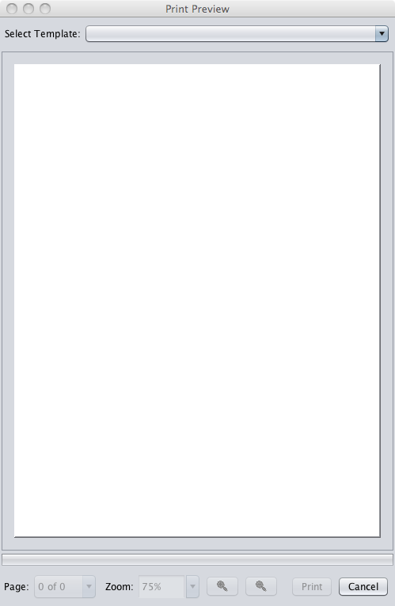
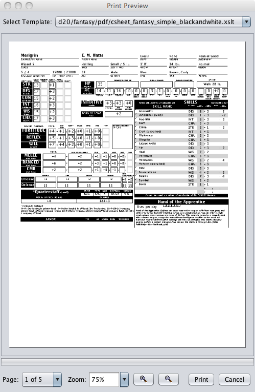
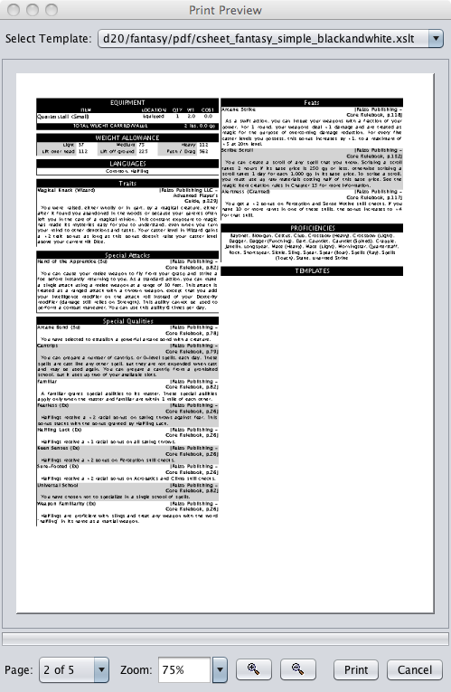

Use File>Print , or use the Print icon in the toolbar, to display the character preview window.

Select the print template (Output Sheet) you wish to use for printing the active character.

Preview the character on the selected character sheet.
 
You can review each page of the character sheet by selecting the page to be reviewed from the Page drop-down.
You can zoom in/out of the preview sheet by using either the Zoom drop-down or the magnifying glass buttons.
Click the Print button to print the character sheet and click the Cancel button to close the Print Preview window without printing.